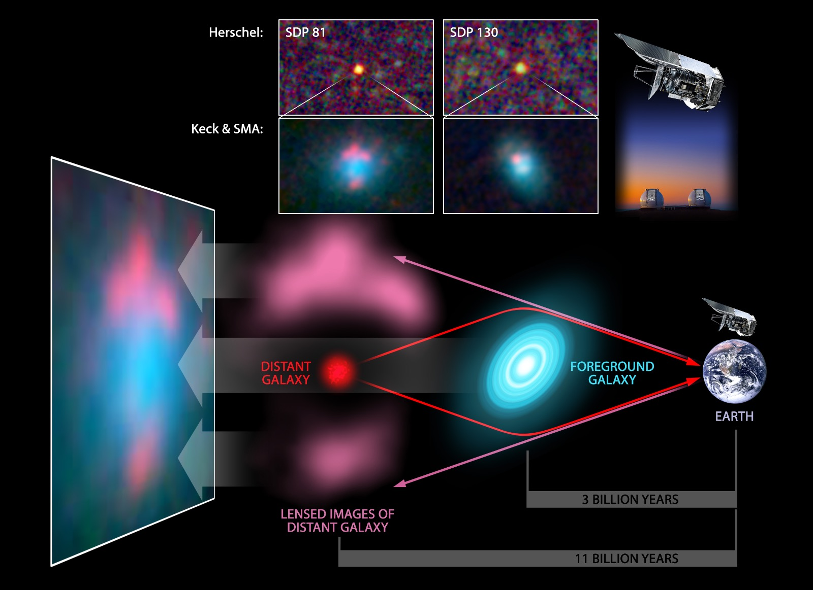
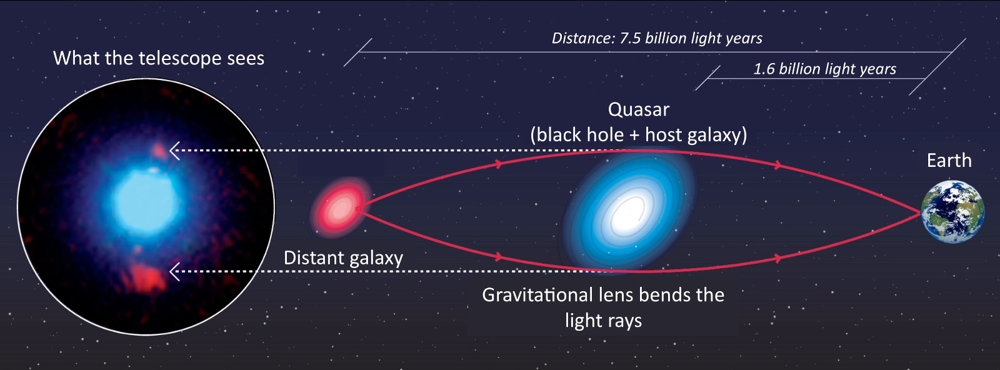

Einstein's Telescope
Gravitational Lensing, also called "Einstein's Telescope" is a fascinating phenomenon that allows us to probe the farthest depths of the universe and understand more about the matter/energy distribution. It is the largest telescope that is available in nature!
Cosmology tries to answer the biggest questions of all - How did the univese come to be? How did it start and how will it end? What is it made up of? All these questions are related and require scientists to measure the various aspects of the observable universe, such as sizes of various galaxies, their approximate mass distribution and how fast they are moving.
The universe is far too huge for us to directly probe and measure these details and hence we use indirect measurements. The light spectrum coming from stars and galaxies can tell us their age, their composition, their mass and at what stage they are in their lifecycle. In order to observe galaxies and galaxy clusters that are millions of light years away and hidden "behind" other galaxies or galaxy clusters, astronomers use what is referred to as the "Einstein's telescope".
So What is "Einstein's telescope"? Einstein's General Theory of relativity predicted that light rays are bent when they pass by a sufficiently massive body. The more massive the body, the more pronounced is the bending effect. This was experimentally verified in the famous Eddington expedition which measured the deflection of starlight by the Sun during a total solar eclipse.
Since this bending effect is very similar to the one using optical devices like lenses when light passes from a more dense medium to a less dense one, scientists have taken this phenomenon and applied to probe the large scale structure of the universe. The kind of lensing that astromomers and cosmologists are interested in is at the largest of the scapes - looking at galaxies and galaxy clusters. Light from far galaxies, when travelling towards the earth is bent by galaxies and galaxy clusters that lie in between. The galaxies and galaxy clusters act like the "objective" convex lens of a telescope with the light bending around them allowing astronomers to probe and get images of galaxies that are behind other galaxies. This is the world's largest telescope with the size of millions of light years and is called "Einstein's telescope" after Albert Einstein who discovered the light bending phenomenon, which forms the basis of gravitational lensing.
Below are a few pictures that demonstrate how distant galaxies can be visualized from the earth due to the gravitational lensing effect of a more proximate galaxy

